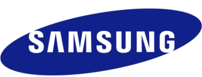

All-in-one image restoration
Building robust representation learning methods that handle mixed, blind, and out-of-distribution degradations.
Chu-Jie Qin (覃楚杰) is a PhD student at Nankai University, advised by Prof. Ming-Ming Cheng. His research interests include computer vision and deep learning, previously focusing on computational photography and Diffusion Model.
Building robust representation learning methods that handle mixed, blind, and out-of-distribution degradations.
Connecting low-level vision models with practical RAW capture, restoration, and deployment constraints.
Exploring VLM-assisted workflows for image retouching, subjective preference modeling, and creative editing.
|
2025/10 - Right Now Shenzhen, China |
Research Scientist InternWorking on the development of aesthetic agents for image retouching, and the integration of VLM for image retouching. ReflectionWorking on this 24/7 has been both demanding and rewarding. It revealed the gap between research and practical deployment, and helped me find clearer direction. Special thanks to Siyu Liu and PengFei Yang for their support. |
|
2024/05 - 2025/09 Hangzhou, China |
Huawei Cooperation Project | Project LeadRecipient of the 2025 Outstanding Technical Cooperation Project award from Huawei, with potential future deployment. ReflectionWorking on this 24/7 has been both demanding and rewarding. It revealed the gap between research and practical deployment, and helped me find clearer direction. Special thanks to Siyu Liu and PengFei Yang for their support. |
|
 2023/09 - 2023/12 Beijing, China |
Research Scientist InternWorked with Zi-Kun Liu, where I proposed the ideas of RAM and RAM++. |